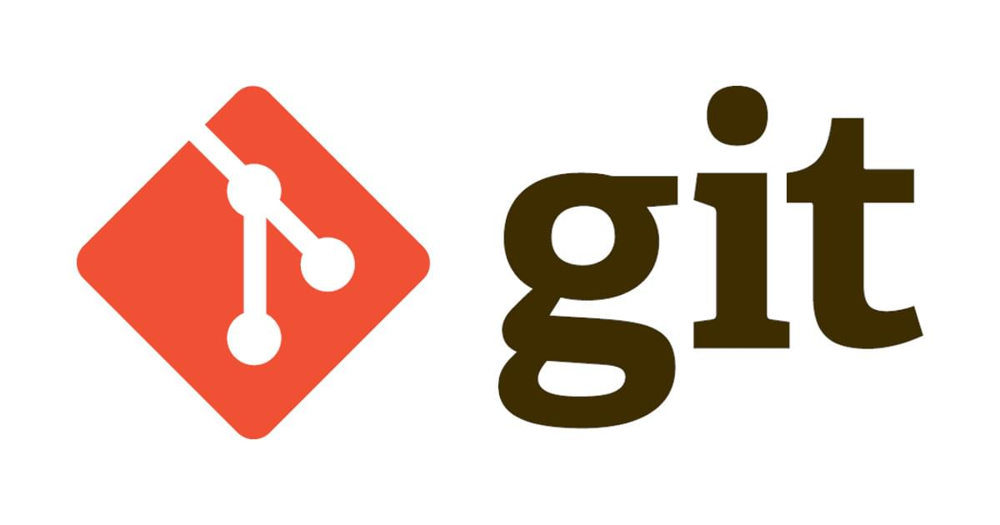
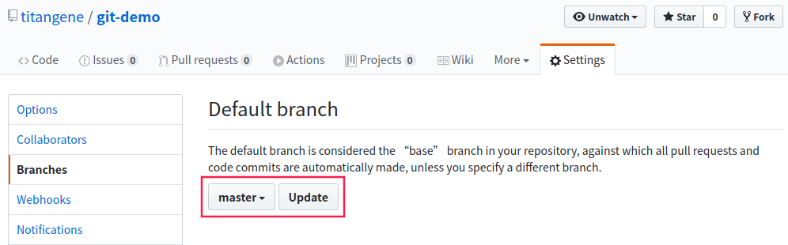
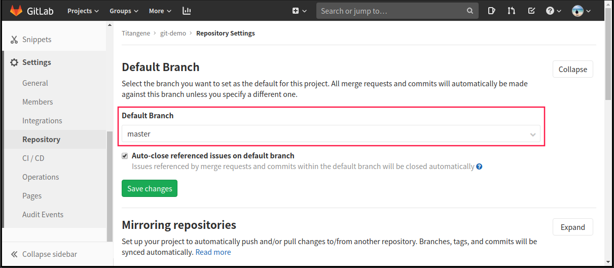

<!DOCTYPE html><html><head><meta charset="utf-8"><title>Git - 刪除遠端分支 (以 GitHub、GitLab 為例) | Titangene Blog</title><meta http-equiv="X-UA-Compatible" content="IE=edge"><meta name="viewport" content="width=device-width,initial-scale=1,maximum-scale=1"><meta name="HandheldFriendly" content="True"><meta name="apple-mobile-web-app-capable" content="yes"><meta name="author" content="Titangene"><link rel="shortcut icon" href="/favicon.ico"><link rel="alternate" href="/atom.xml" title="Titangene Blog"><meta name="description" content="本篇將介紹如何刪除 GitHub 或 GitLab 的遠端分支，以及透過是否可刪除遠端 master 分支 (雖然通常不會這樣做)，以了解如何在 GitHub 和 GitLab 修改預設分支。"><meta property="og:type" content="article"><meta property="og:title" content="Git - 刪除遠端分支 (以 GitHub、GitLab 為例)"><meta property="og:url" content="https://titangene.github.io/article/git-delete-remote-branch.html"><meta property="og:site_name" content="Titangene Blog"><meta property="og:description" content="本篇將介紹如何刪除 GitHub 或 GitLab 的遠端分支，以及透過是否可刪除遠端 master 分支 (雖然通常不會這樣做)，以了解如何在 GitHub 和 GitLab 修改預設分支。"><meta property="og:locale" content="zh_TW"><meta property="og:image" content="https://titangene.github.io/images/cover/git.jpg"><meta property="article:published_time" content="2020-02-09T15:45:52.000Z"><meta property="article:modified_time" content="2020-02-09T15:43:21.000Z"><meta property="article:author" content="Titangene"><meta property="article:tag" content="w3HexSchool"><meta property="article:tag" content="GitHub"><meta property="article:tag" content="GitLab"><meta property="article:tag" content="Branch"><meta property="article:tag" content="Remote"><meta name="twitter:card" content="summary_large_image"><meta name="twitter:image" content="https://titangene.github.io/images/cover/git.jpg"><meta name="twitter:creator" content="@titangeneTW"><meta name="twitter:site" content="@titangene_blog"><meta property="fb:admins" content="100001106016019"><meta property="fb:app_id" content="2470546159839111"><meta property="og:image:width" content="1200"><meta property="og:image:height" content="630"><meta name="google-site-verification" content="AaJ39L7h-nWwJjXJMhAMtXSF6H6BUgGWXC80kYvLic8"><link href="https://fonts.googleapis.com/css2?family=Roboto&display=swap" rel="stylesheet"><link href="https://fonts.googleapis.com/css?family=Source+Code+Pro&display=swap" rel="stylesheet"><link rel="stylesheet" href="https://cdnjs.cloudflare.com/ajax/libs/font-awesome/5.13.0/css/all.min.css"><link rel="stylesheet" href="https://unpkg.com/gitalk/dist/gitalk.css"><link rel="stylesheet" href="/style.css"><script async src="https://www.googletagmanager.com/gtag/js?id=UA-129758206-1"></script><script>!function(a){function n(){dataLayer.push(arguments)}a.dataLayer=a.dataLayer||[],n("js",new Date),n("config","UA-129758206-1")}(window)</script><script>function setLoadingBarProgress(e){document.getElementById("loading-bar").style.width=e+"%"}</script><meta name="generator" content="Hexo 4.2.0"><link rel="alternate" href="/atom.xml" title="Titangene Blog" type="application/atom+xml"></head></html><body><div id="loading-bar-wrapper"><div id="loading-bar"></div></div><script>setLoadingBarProgress(20)</script><header class="l_header"><div class="wrapper"><div class="nav-main container container--flex"><a class="logo flat-box" href="/">Titangene Blog</a><div class="menu"><ul class="h-list"><li><a class="flat-box nav-home" href="/">Home</a></li><li><a class="flat-box nav-archives" href="/archives">Archives</a></li></ul><div class="underline"></div></div><div class="m_search"><form name="searchform" class="form u-search-form"><input type="text" class="input u-search-input" placeholder="Search"> <i class="fas fa-search"></i></form></div><ul class="switcher h-list"><li class="s-search"><a class="fas fa-search" href="javascript:void(0)"></a></li><li class="s-menu"><a class="fas fa-bars" href="javascript:void(0)"></a></li></ul></div><div class="nav-sub container container--flex"><a class="logo flat-box" href="/">Titangene Blog</a><ul class="switcher h-list"><li class="s-comment"><a class="far fa-comment-alt" href="javascript:void(0)"></a></li><li class="s-top"><a class="fas fa-arrow-up" href="javascript:void(0)"></a></li><li class="s-toc"><a class="fas fa-list-ol" href="javascript:void(0)"></a></li></ul></div></div></header><aside class="menu-phone"><nav><a href="/" class="nav-home nav">Home </a><a href="/archives" class="nav-archives nav">Archives</a></nav></aside><script>setLoadingBarProgress(40)</script><div class="l_body"><div class="container clearfix"><div class="l_main"><article id="post-git-delete-remote-branch" class="post white-box article-type-post" itemscope itemprop="blogPost"><section class="meta"><h2 class="title"><a href="/article/git-delete-remote-branch.html">Git - 刪除遠端分支 (以 GitHub、GitLab 為例)</a></h2><span class="post-time"><span class="post-meta-item-icon"><i class="fa fa-calendar"></i> </span><span class="post-meta-item-text">發表於</span> <time title="建立時間：2020-02-09 23:45:52" itemprop="dateCreated datePublished" datetime="2020-02-09T23:45:52+08:00">2020-02-09</time></span> <span class="comments-count"><span class="post-meta-divider">|</span> <span class="post-meta-item-icon"><i class="fas fa-comment"></i> </span><a href="https://titangene.github.io/article/git-delete-remote-branch.html#comments" class="article-comment-count">留言</a></span><div class="post-category"><span class="post-meta-item-icon"><i class="fa fa-folder"></i> </span><span class="post-meta-item-text">分類於</span> <span itemprop="about" itemscope itemtype="http://schema.org/Thing"><a href="/categories/git/" itemprop="url" rel="index"><span itemprop="name">Git</span></a></span></div></section><section class="toc-wrapper"><h3>目錄</h3><ol class="toc"><li class="toc-item toc-level-2"><a class="toc-link" href="#刪除多個遠端分支"><span class="toc-text">刪除多個遠端分支</span></a></li><li class="toc-item toc-level-2"><a class="toc-link" href="#無法刪除的遠端分支"><span class="toc-text">無法刪除的遠端分支</span></a></li><li class="toc-item toc-level-2"><a class="toc-link" href="#刪除-GitHub-的遠端分支"><span class="toc-text">刪除 GitHub 的遠端分支</span></a></li><li class="toc-item toc-level-2"><a class="toc-link" href="#刪除-GitLab-的遠端分支"><span class="toc-text">刪除 GitLab 的遠端分支</span></a></li><li class="toc-item toc-level-2"><a class="toc-link" href="#察看是否刪除遠端分支"><span class="toc-text">察看是否刪除遠端分支</span></a></li></ol></section><section class="article typo"><div class="article-entry" itemprop="articleBody"><p></p><p>本篇將介紹如何刪除 GitHub 或 GitLab 的遠端分支，以及透過是否可刪除遠端 <code>master</code> 分支 (雖然通常不會這樣做)，以了解如何在 GitHub 和 GitLab 修改預設分支。</p><a id="more"></a><p>如果某分支已合併至遠端的 <code>master</code> 分支 (或穩定版的分支) 時，可在 <code>git push</code> 指令加上 <code>--delete</code> 或 <code>-d</code> 選項來刪除遠端分支 <sup class="footnote-ref"><a href="#fn1" id="fnref1">[1]</a></sup>：</p><figure class="highlight shell"><table><tr><td class="gutter"><pre><span class="line">1</span><br><span class="line">2</span><br></pre></td><td class="code"><pre><code class="hljs shell"><span class="hljs-meta">$</span><span class="bash"> git push &lt;remote&gt; --delete &lt;remoteBranchName&gt;</span><br><span class="hljs-meta">$</span><span class="bash"> git push &lt;remote&gt; -d &lt;remoteBranchName&gt;</span><br></code></pre></td></tr></table></figure><figure class="highlight shell"><table><tr><td class="gutter"><pre><span class="line">1</span><br><span class="line">2</span><br><span class="line">3</span><br></pre></td><td class="code"><pre><code class="hljs shell"><span class="hljs-meta">$</span><span class="bash"> git push origin --delete dev</span><br>To github.com:titangene/git-demo.git<br> - [deleted]         dev<br></code></pre></td></tr></table></figure><p>或是在 ref (在這邊指的是下面指令中的 <code>&lt;remoteBranchName&gt;</code> ) 之前加上冒號 ( <code>:</code> ) 也可以刪除遠端分支：</p><figure class="highlight shell"><table><tr><td class="gutter"><pre><span class="line">1</span><br></pre></td><td class="code"><pre><code class="hljs shell"><span class="hljs-meta">$</span><span class="bash"> git push &lt;remote&gt; :&lt;remoteBranchName&gt;</span><br></code></pre></td></tr></table></figure><figure class="highlight shell"><table><tr><td class="gutter"><pre><span class="line">1</span><br><span class="line">2</span><br><span class="line">3</span><br></pre></td><td class="code"><pre><code class="hljs shell"><span class="hljs-meta">$</span><span class="bash"> git push origin :dev</span><br>To github.com:titangene/git-demo.git<br> - [deleted]         dev<br></code></pre></td></tr></table></figure><p>此指令是在 <code>origin</code> repo 中找到與 <code>dev</code> match 的 ref (例如：<code>refs/heads/dev</code> )，然後將該遠端分支刪除 <sup class="footnote-ref"><a href="#fn2" id="fnref2">[2]</a></sup>，其實就是刪除遠端 server 上的分支指標。Git Server 會將資料保留一段時間，直到執行 GC (garbage collection，垃圾回收) 為止。所以如果誤刪了分支都很容易恢復。</p><h2 id="刪除多個遠端分支"><a class="header-anchor" href="#刪除多個遠端分支"></a>刪除多個遠端分支</h2><p>如果要刪除多個遠端分支，可直接將多個指定遠端分支加在後面：</p><figure class="highlight shell"><table><tr><td class="gutter"><pre><span class="line">1</span><br><span class="line">2</span><br><span class="line">3</span><br><span class="line">4</span><br></pre></td><td class="code"><pre><code class="hljs shell"><span class="hljs-meta">$</span><span class="bash"> git push origin -d feature master</span><br>To github.com:titangene/git-demo.git<br> - [deleted]         feature<br> - [deleted]         master<br></code></pre></td></tr></table></figure><h2 id="無法刪除的遠端分支"><a class="header-anchor" href="#無法刪除的遠端分支"></a>無法刪除的遠端分支</h2><p>通常預設會無法刪除遠端的 <code>master</code> 分支，因為遠端通常會將 <code>master</code> 分支作為預設分支：</p><figure class="highlight shell"><table><tr><td class="gutter"><pre><span class="line">1</span><br><span class="line">2</span><br><span class="line">3</span><br><span class="line">4</span><br></pre></td><td class="code"><pre><code class="hljs shell"><span class="hljs-meta">$</span><span class="bash"> git push origin -d master</span><br>To github.com:titangene/git-demo.git<br> ! [remote rejected] master (refusing to delete the current branch: refs/heads/master)<br>error: failed to push some refs to 'git@github.com:titangene/git-demo.git'<br></code></pre></td></tr></table></figure><p>預設是無法刪除 GitHub 和 GitLab 遠端 repo 的 <code>master</code> 分支。</p><h2 id="刪除-GitHub-的遠端分支"><a class="header-anchor" href="#刪除-GitHub-的遠端分支"></a>刪除 GitHub 的遠端分支</h2><p>如果要刪除 GitHub 遠端 repo 的 <code>master</code> 分支，只要將該 repo 的預設分支改成其他分支，這樣就可以刪掉了。</p><p>在 repo 的「Settings &gt; Branches &gt; Default branch &gt; 將預設分支改為其他分支 &gt; Update」，如圖：</p><p></p><figure class="highlight shell"><table><tr><td class="gutter"><pre><span class="line">1</span><br><span class="line">2</span><br><span class="line">3</span><br></pre></td><td class="code"><pre><code class="hljs shell"><span class="hljs-meta">$</span><span class="bash"> git push origin -d master</span><br>To github.com:titangene/git-demo.git<br> - [deleted]         master<br></code></pre></td></tr></table></figure><h2 id="刪除-GitLab-的遠端分支"><a class="header-anchor" href="#刪除-GitLab-的遠端分支"></a>刪除 GitLab 的遠端分支</h2><p>刪除 GitLab 遠端 repo 的 <code>master</code> 分支時，會發生以下錯誤，錯誤訊息中直接說明 <code>master</code> 分支是預設分支，所以無法刪除：</p><figure class="highlight shell"><table><tr><td class="gutter"><pre><span class="line">1</span><br><span class="line">2</span><br><span class="line">3</span><br><span class="line">4</span><br><span class="line">5</span><br></pre></td><td class="code"><pre><code class="hljs shell"><span class="hljs-meta">$</span><span class="bash"> git push gitlab -d master</span><br>remote: GitLab: The default branch of a project cannot be deleted.<br>To gitlab.com:titangene/git-demo.git<br> ! [remote rejected] master (pre-receive hook declined)<br>error: failed to push some refs to 'git@gitlab.com:titangene/git-demo.git'<br></code></pre></td></tr></table></figure><p>在 repo 的「Settings &gt; Repository &gt; Default branch &gt; 將預設分支改為其他分支 &gt; Save changes」，如圖：</p><p></p><p>那如果將預設分支改成其他分支呢？結果還是不能刪除：</p><figure class="highlight shell"><table><tr><td class="gutter"><pre><span class="line">1</span><br><span class="line">2</span><br><span class="line">3</span><br><span class="line">4</span><br><span class="line">5</span><br></pre></td><td class="code"><pre><code class="hljs shell"><span class="hljs-meta">$</span><span class="bash"> git push gitlab -d master</span><br>remote: GitLab: You can only delete protected branches using the web interface.<br>To gitlab.com:titangene/git-demo.git<br> ! [remote rejected] master (pre-receive hook declined)<br>error: failed to push some refs to 'git@gitlab.com:titangene/git-demo.git'<br></code></pre></td></tr></table></figure><p>其實原因也寫在錯誤訊息內，因為 GitLab 會預設將 repo 的 <code>master</code> 分支設為受保護的分支 (protected branch) <sup class="footnote-ref"><a href="#fn3" id="fnref3">[3]</a></sup> <sup class="footnote-ref"><a href="#fn4" id="fnref4">[4]</a></sup>，所以才不能刪除。</p><p>如果要刪除受保護的分支，那就讓他不受保護就可以囉 XD。</p><p>在 repo 的「Settings &gt; Repository &gt; Protected Branches &gt; Unprotect <code>master</code> 分支」，如圖：</p><p></p><p>設定後就可以刪除 <code>master</code> 分支了：</p><figure class="highlight shell"><table><tr><td class="gutter"><pre><span class="line">1</span><br><span class="line">2</span><br><span class="line">3</span><br></pre></td><td class="code"><pre><code class="hljs shell"><span class="hljs-meta">$</span><span class="bash"> git push gitlab -d master</span><br>To gitlab.com:titangene/git-demo.git<br> - [deleted]         master<br></code></pre></td></tr></table></figure><h2 id="察看是否刪除遠端分支"><a class="header-anchor" href="#察看是否刪除遠端分支"></a>察看是否刪除遠端分支</h2><p>另外，如果用 <code>git branch -vv</code> 可以看到該分支已被刪除 (輸出訊息中的 <code>gone</code> )：</p><figure class="highlight shell"><table><tr><td class="gutter"><pre><span class="line">1</span><br><span class="line">2</span><br><span class="line">3</span><br></pre></td><td class="code"><pre><code class="hljs shell"><span class="hljs-meta">$</span><span class="bash"> git branch -vv</span><br>* dev    44fdaf6 [origin/dev: gone] feat: d<br>  master 49135dc [origin/master] feat: b<br></code></pre></td></tr></table></figure><hr class="footnotes-sep"><section class="footnotes"><ol class="footnotes-list"><li id="fn1" class="footnote-item"><p><a href="https://git-scm.com/book/en/v2/Git-Branching-Remote-Branches#_delete_branches" target="_blank" rel="noopener">Git - Remote Branches | Pro Git, 2/e</a> <a href="#fnref1" class="footnote-backref">↩︎</a></p></li><li id="fn2" class="footnote-item"><p><a href="https://git-scm.com/docs/git-push#Documentation/git-push.txt-codegitpushoriginexperimentalcode" target="_blank" rel="noopener">Git - git-push Documentation</a> <a href="#fnref2" class="footnote-backref">↩︎</a></p></li><li id="fn3" class="footnote-item"><p><a href="https://gitlab.com/help/user/permissions" target="_blank" rel="noopener">Permissions · User · Help · GitLab</a> <a href="#fnref3" class="footnote-backref">↩︎</a></p></li><li id="fn4" class="footnote-item"><p><a href="https://gitlab.com/help/user/project/protected_branches" target="_blank" rel="noopener">Protected branches · Project · User · Help · GitLab</a> <a href="#fnref4" class="footnote-backref">↩︎</a></p></li></ol></section></div><div class="article-tags tags"><a href="/tags/w3hexschool/" title="w3HexSchool">w3HexSchool</a> <a href="/tags/github/" title="GitHub">GitHub</a> <a href="/tags/gitlab/" title="GitLab">GitLab</a> <a href="/tags/branch/" title="Branch">Branch</a> <a href="/tags/remote/" title="Remote">Remote</a></div></section><div class="article-share-links"><span>分享：</span> <a class="fab fa-facebook-f" title="Facebook" target="_blank" href="javascript:window.open('https://www.facebook.com/sharer.php?u=https%3A%2F%2Ftitangene.github.io%2Farticle%2Fgit-delete-remote-branch.html', 'Share on Facebook','width=600, height=600')"></a> <a class="fab fa-twitter" title="Twitter" target="_blank" href="javascript:window.open('https://twitter.com/share?url=https%3A%2F%2Ftitangene.github.io%2Farticle%2Fgit-delete-remote-branch.html&amp;text=Git - 刪除遠端分支 (以 GitHub、GitLab 為例)&amp;hashtags=w3HexSchool,GitHub,GitLab,Branch,Remote&amp;via=titangene_blog', 'Share on Twitter','width=600, height=260')"></a> <a class="fab fa-linkedin-in" title="Linkedin" target="_blank" href="javascript:window.open('https://www.linkedin.com/shareArticle?mini=true&amp;url=https%3A%2F%2Ftitangene.github.io%2Farticle%2Fgit-delete-remote-branch.html&amp;title=Git - 刪除遠端分支 (以 GitHub、GitLab 為例)', 'Share on Linkedin','width=600, height=600')"></a> <a class="fab fa-facebook-messenger" title="Facebook Messenger" target="_blank" href="javascript:window.open('http://www.facebook.com/dialog/send?app_id=2470546159839111&amp;link=https%3A%2F%2Ftitangene.github.io%2Farticle%2Fgit-delete-remote-branch.html&amp;display=popup&amp;redirect_uri=https%3A%2F%2Fwww.facebook.com%2Fdialog%2Freturn%2Fclose%23_%3D_', 'Send in Messenger','width=600, height=600')"></a> <a class="fab fa-telegram-plane" href="https://telegram.me/share/url?url=https%3A%2F%2Ftitangene.github.io%2Farticle%2Fgit-delete-remote-branch.html&text=Git - 刪除遠端分支 (以 GitHub、GitLab 為例)" target="_blank"></a></div><nav id="article-nav"><a href="/article/css-series-catalog.html" id="article-nav-prev" class="article-nav-link-wrap" title="重新認識 CSS - 總結 &amp; 系列目錄" rel="prev"><strong class="article-nav-caption">Prev</strong><p class="article-nav-title">重新認識 CSS - 總結 &amp; 系列目錄</p><i class="fas fa-angle-left"></i> </a><a href="/article/git--blob-object.html" id="article-nav-next" class="article-nav-link-wrap" title="深入 Git：Git 物件儲存 - blob 物件" rel="next"><strong class="article-nav-caption">Next</strong><p class="article-nav-title">深入 Git：Git 物件儲存 - blob 物件</p><i class="fas fa-angle-right"></i></a></nav><section id="list_related_posts"><h2>相關文章</h2><ul class="related-posts"><li class="related-posts-item"><a class="related-posts-link" href="/article/sass-import-rule.html">Sass：@import rule</a><div class="related-posts-item-abstract">Sass 的 @import rule 可以引入 Sass 和 CSS stylesheet、提供對 mixin、function 和變數的存取，並且還能將多個 stylesheet 的 CSS 組合在一起。例如：mai</div></li><li class="related-posts-item"><a class="related-posts-link" href="/article/sass-use-rule.html">Sass：@use rule</a><div class="related-posts-item-abstract">若要模組化 Sass，最常用的就是 @import 規則。但在 Dart Sass 推出了一個新功能：模組系統，可用 @use 規則，並透過 namespace 來引入其他 stylesheet 中的成員。Overvie</div></li><li class="related-posts-item"><a class="related-posts-link" href="/article/git-branch-ref.html">深入 Git：分支 refs</a><div class="related-posts-item-abstract">本篇將深入探討 Git 分支到底是什麼？建立分支時到底建立了什麼？如何紀錄分支要指向哪個 commit？Git 參考 (references 或 refs) 都存在 .git/refs 目錄內，目錄結構如下：123456</div></li><li class="related-posts-item"><a class="related-posts-link" href="/article/git-index.html">深入 Git：index 檔案</a><div class="related-posts-item-abstract">git add 會將檔案加入 index，究竟 index 到底存在哪？其實，通常會放在 .git/index，本篇將深入探討此檔案式如何紀錄有哪些檔案被加入 index。index 是一個二進位檔案，通常放在 .git</div></li><li class="related-posts-item"><a class="related-posts-link" href="/article/git-detached-head.html">淺入 Git：detached HEAD</a><div class="related-posts-item-abstract">在 Git 的世界中，想回到過去，也許你會用 git checkout 跳至某個過去的 commit，但 Git 會提醒你正在「detached HEAD」狀態。那 detached HEAD 是什麼？它能做什麼？要怎麼</div></li><li class="related-posts-item"><a class="related-posts-link" href="/article/jest-mock-function.html">Jest：Mock 函數</a><div class="related-posts-item-abstract">Jest 提供的 mock 函數可讓你自行決定要 mock 到什麼程度，並且可讓你在呼叫該 mock 函數之後，捕捉呼叫的次數、傳入的參數、使用 new 實例化的 instance，以及你指定要回傳的值，我們可透過這些資</div></li></ul></section><section class="comments" id="comments"><h2>討論區</h2><div id="gitalk-container"></div><div id="disqus_thread" style="margin-top:20px"><noscript>Please enable JavaScript to view the <a href="https://disqus.com/?ref_noscript" target="_blank" rel="noopener">comments powered by Disqus.</a></noscript></div></section></article><script>window.subData={title:"Git - 刪除遠端分支 (以 GitHub、GitLab 為例)",tools:!0}</script></div><aside class="l_side"><section class="m_widget about"><div class="avatar-section"><style>.avatar-cover{background:url(/images/avatar_cover.jpg) 0 10%/cover no-repeat}</style><div class="avatar-cover"></div></div><div class="header">Titangene</div><div class="content"><div class="desc">利用 blog 紀錄學習歷程</div></div><div class="content"><meta itemprop="url" content="https://titangene.github.io"><div class="social-wrapper"><a itemprop="sameAs" href="https://github.com/titangene" class="social github" target="_blank" rel="external"><span class="fab fa-github-alt"></span> </a><a itemprop="sameAs" href="https://www.facebook.com/titangene.tw" class="social facebook" target="_blank" rel="external"><span class="fab fa-facebook-square"></span> </a><a itemprop="sameAs" href="https://www.instagram.com/titangene/" class="social instagram" target="_blank" rel="external"><span class="fab fa-instagram"></span> </a><a itemprop="sameAs" href="https://www.flickr.com/photos/titangene" class="social flickr" target="_blank" rel="external"><span class="fab fa-flickr"></span> </a><a itemprop="sameAs" href="/atom.xml" class="social rss" target="_blank" rel="external"><span class="fas fa-rss"></span></a></div></div></section><section class="m_widget facebook_page"><div class="fb-page" data-href="https://www.facebook.com/titangene.blog/" data-width="250" data-small-header="false" data-adapt-container-width="false" data-hide-cover="false" data-show-facepile="true"><blockquote cite="https://www.facebook.com/titangene.blog/" class="fb-xfbml-parse-ignore"><p><a href="https://www.facebook.com/titangene.blog/" class="social facebook" target="_blank"><span class="fab fa-facebook-square"></span></a></p><p><a href="https://www.facebook.com/titangene.blog/" target="_blank" rel="noopener">Titangene Blog</a></p><p>Loading...</p></blockquote></div></section><section class="m_widget recent"><div class="header">Recents</div><div class="content"><ul class="entry"><li><a itemprop="url" class="flat-box" href="/article/jest-mock-function.html"><time>2020-07-05</time><div class="name">Jest：Mock 函數</div></a></li><li><a itemprop="url" class="flat-box" href="/article/jest-async-test.html"><time>2020-06-28</time><div class="name">Jest：非同步測試</div></a></li><li><a itemprop="url" class="flat-box" href="/article/jest-setup-teardown.html"><time>2020-06-21</time><div class="name">Jest：Setup &amp; Teardown</div></a></li><li><a itemprop="url" class="flat-box" href="/article/jest-describe-test-case.html"><time>2020-06-14</time><div class="name">Jest：Describe &amp; Test case</div></a></li><li><a itemprop="url" class="flat-box" href="/article/jest-matcher-assertion.html"><time>2020-06-07</time><div class="name">Jest：Matcher &amp; Assertion</div></a></li><li><a itemprop="url" class="flat-box" href="/article/jest-typescript.html"><time>2020-05-31</time><div class="name">Jest + TypeScript：建置測試環境</div></a></li><li><a itemprop="url" class="flat-box" href="/article/jest-build-test-env.html"><time>2020-05-24</time><div class="name">Jest：建置測試環境 (包含 Babel)</div></a></li></ul></div></section></aside><script>setLoadingBarProgress(60)</script></div></div><footer id="footer" class="clearfix"><div class="social-wrapper"><a href="https://github.com/titangene" class="social github" target="_blank" rel="external"><span class="fab fa-github-alt"></span> </a><a href="https://www.facebook.com/titangene.tw" class="social facebook" target="_blank" rel="external"><span class="fab fa-facebook-square"></span> </a><a href="https://www.instagram.com/titangene/" class="social instagram" target="_blank" rel="external"><span class="fab fa-instagram"></span> </a><a href="https://www.flickr.com/photos/titangene" class="social flickr" target="_blank" rel="external"><span class="fab fa-flickr"></span> </a><a href="/atom.xml" class="social rss" target="_blank" rel="external"><span class="fas fa-rss"></span></a></div><div>© 2018 - 2020 <span itemprop="copyrightHolder">Titangene</span></div><div>Powered by <a href="https://hexo.io/" target="_blank" class="codename" rel="external noopener">Hexo</a> - Theme <a href="https://github.com/stkevintan/hexo-theme-material-flow" target="_blank" class="codename" rel="external noopener">MaterialFlow</a></div><div><a rel="license noopener" href="http://creativecommons.org/licenses/by-nc-sa/4.0/" target="_blank" rel="external noopener"></a></div></footer><script>setLoadingBarProgress(80)</script><script src="//cdnjs.cloudflare.com/ajax/libs/jquery/2.1.4/jquery.min.js"></script><script src="https://cdnjs.cloudflare.com/ajax/libs/clipboard.js/2.0.0/clipboard.min.js"></script><script src="https://unpkg.com/gitalk/dist/gitalk.min.js"></script><script src="/js/jquery.fitvids.js"></script><script>var SEARCH_SERVICE="hexo",ROOT="/";ROOT.endsWith("/")||(ROOT+="/")</script><script src="/js/search.js"></script><script src="/js/app.js"></script><script src="/js/clipboard-use.js"></script><script type="text/javascript">var gitalk=new Gitalk({clientID:"dd1684f31ee17e25c22b",clientSecret:"4b51bb4a5996b04d58821a6e3da8558f23da4cdf",id:window.location.pathname,repo:"hexo-blog",owner:"titangene",admin:"titangene",distractionFreeMode:"true"});gitalk.render("gitalk-container")</script><script>var disqus_shortname="titangene-blog",disqus_config=function(){this.page.url="https://titangene.github.io/article/git-delete-remote-branch.html",this.page.identifier="article/git-delete-remote-branch.html",this.page.title="Git - 刪除遠端分支 (以 GitHub、GitLab 為例)"};!function(){var t=document.createElement("script");t.async=!0,t.src="//"+disqus_shortname+".disqus.com/embed.js",t.setAttribute("data-timestamp",""+new Date),(document.head||document.body).appendChild(t)}()</script><script id="dsq-count-scr" src="https://titangene-blog.disqus.com/count.js" async></script><div id="fb-root"></div><script>window.fbAsyncInit=function(){FB.init({appId:"2470546159839111",autoLogAppEvents:!0,xfbml:!0,version:"v2.11"}),FB.AppEvents.logPageView()},function(e,n,t){var o,s=e.getElementsByTagName(n)[0];e.getElementById(t)||((o=e.createElement(n)).id=t,o.src="//connect.facebook.net/zh_TW/sdk.js",s.parentNode.insertBefore(o,s))}(document,"script","facebook-jssdk")</script><script>setLoadingBarProgress(100)</script></body>